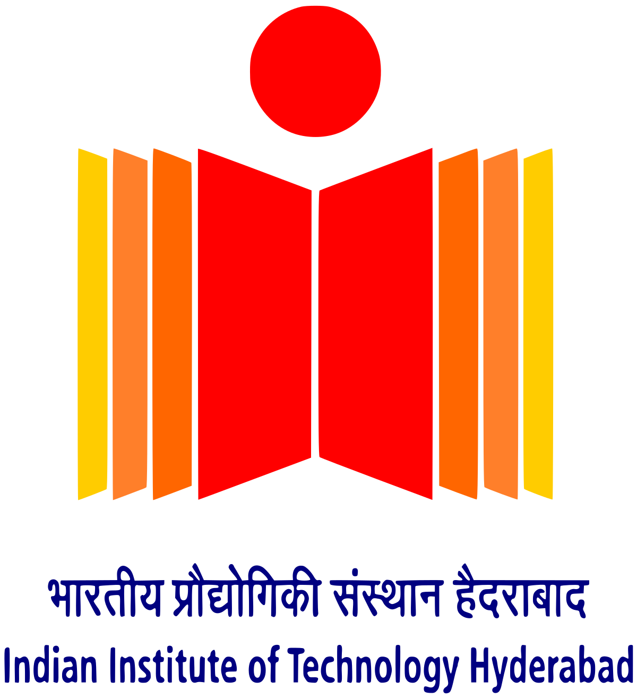

|
Kartik Singhal I am an undergrad at IIIT Delhi, India, studying Computer Science and Applied Mathematics (2021-25). During my time at UofSC, I worked on audio-visual navigation for search and rescue scenarios with Dr. Mehdi Yaghouti and Dr. Pooyan Jamshidi. Just after school, I did a remote internship at IIT Hyderabad, where I explored dynamic networks and continual learning. It turned to be more of an introduction to how things work in research world, than a project. Email / CV / LinkedIn / Github Hi, I am looking for research internships in academia/industry for 3 months or maybe 8 months, starting May 2024. |

|
Affiliations |

|

|
 |
| IIIT Delhi 2021-2025 |
U of South Carolina Summer 2023 |
IIT Hyderabad July-Dec 2021 |
Awards |
 Google Code-In 2019: Selected as Grand Prize Winner for open-source contribution and won a sponsored trip to Google HQ, San Francisco, but COVID happened.
Google Code-In 2019: Selected as Grand Prize Winner for open-source contribution and won a sponsored trip to Google HQ, San Francisco, but COVID happened.
|
ResearchI'm interested in AI, robotics and perception, broadly autonomous systems. This semester, I am working on three things, robotics course, MLOps and a project with Dr. Sayan Basu Roy on adaptive extremum seeking lying at intersection of online optimization and control. |

|
Multi-Sense-Rescuer: Multi-Target Audio-Visual Learning and Navigation in Search and Rescue Scenarios
Kartik Singhal, Mehdi Yaghouti, Pooyan Jamshidi IROS Learning Robotic Super Autonomy Workshop, 2023 [Under review at ICRA 2024] Project Page / PDF Extending audio-visual source seeking navigation to multi-source scenario and employing transfer learning results in ~10x improvement in sample efficiency for Matterport3D dataset. |
|
This website template is borrowed from Jon Barron's website. |